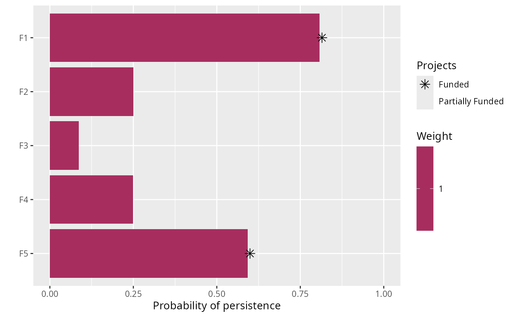
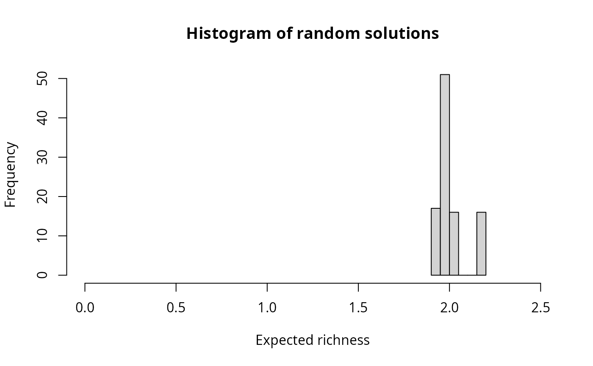

Specify that solutions should be generated using random processes. Although prioritizations should be developed using optimization routines, a portfolio of randomly generated solutions can be useful for evaluating the effectiveness of solutions.
add_random_solver(x, number_solutions = 1, verbose = TRUE)
| x | ProjectProblem object. |
|---|---|
| number_solutions |
|
| verbose |
|
ProjectProblem object with the solver added to it.
The algorithm used to randomly generate solutions depends on the
the objective specified for the project prioritization
problem().
For objectives which maximize benefit subject to budgetary constraints
(e.g. add_max_richness_objective()):
All locked in and zero-cost actions are initially selected for funding (excepting actions which are locked out).
A project---and all of its associated actions---is randomly selected for funding (excepting projects associated with locked out actions, and projects which would cause the budget to be exceeded when added to the existing set of selected actions).
The previous step is repeated until no more projects can be selected for funding without the total cost of the prioritized actions exceeding the budget.
For objectives which minimize cost subject to biodiversity constraints
(i.e. add_min_set_objective():
All locked in and zero-cost actions are initially selected for funding (excepting actions which are locked out).
A project---and all of its associated actions---is randomly selected for funding (excepting projects associated with locked out actions, and projects which would cause the budget to be exceeded when added to the existing set of selected actions).
The previous step is repeated until all of the persistence targets are met.
# load data data(sim_projects, sim_features, sim_actions) # build problem with random solver, and generate 100 random solutions p1 <- problem(sim_projects, sim_actions, sim_features, "name", "success", "name", "cost", "name") %>% add_max_richness_objective(budget = 200) %>% add_binary_decisions() %>% add_random_solver(number_solutions = 100) # print problem print(p1)#> Project Prioritization Problem #> actions F1_action, F2_action, F3_action, ... (6 actions) #> projects F1_project, F2_project, F3_project, ... (6 projects) #> features F1, F2, F3, ... (5 features) #> action costs: min: 0, max: 103.22583 #> project success: min: 0.81379, max: 1 #> objective: Maximum richness objective [budget (200)] #> targets: none #> weights: default #> decisions Binary decision #> constraints: <none> #> solver: Random [number_solutions (100), verbose (1)]#> # A tibble: 100 x 21 #> solution status obj cost F1_action F2_action F3_action F4_action F5_action #> <int> <chr> <dbl> <dbl> <dbl> <dbl> <dbl> <dbl> <dbl> #> 1 1 NA 1.99 194. 1 0 0 0 1 #> 2 2 NA 2.01 194. 1 0 0 1 0 #> 3 3 NA 1.96 198. 1 0 1 0 0 #> 4 4 NA 1.96 198. 1 0 1 0 0 #> 5 5 NA 1.91 199. 0 0 0 1 1 #> 6 6 NA 1.99 194. 1 0 0 0 1 #> 7 7 NA 1.96 198. 1 0 1 0 0 #> 8 8 NA 1.96 198. 1 0 1 0 0 #> 9 9 NA 1.96 198. 1 0 1 0 0 #> 10 10 NA 2.19 195. 1 1 0 0 0 #> # … with 90 more rows, and 12 more variables: baseline_action <dbl>, #> # F1_project <dbl>, F2_project <dbl>, F3_project <dbl>, F4_project <dbl>, #> # F5_project <dbl>, baseline_project <dbl>, F1 <dbl>, F2 <dbl>, F3 <dbl>, #> # F4 <dbl>, F5 <dbl># plot histogram of the objective values for the random solutions hist(s1$obj, xlab = "Expected richness", xlim = c(0, 2.5), main = "Histogram of random solutions")# since the objective values don't tell us much about the quality of the # solutions, we can find the optimal solution and calculate how different # each of the random solutions is from optimality # \dontrun{ # find the optimal objective value using an exact algorithms solver s2 <- p1 %>% add_default_solver() %>% solve()#> Warning: overwriting previously defined solver#> Gurobi Optimizer version 9.1.2 build v9.1.2rc0 (linux64) #> Thread count: 4 physical cores, 8 logical processors, using up to 1 threads #> Optimize a model with 47 rows, 47 columns and 102 nonzeros #> Model fingerprint: 0xab0d0209 #> Variable types: 0 continuous, 42 integer (42 binary) #> Semi-Variable types: 5 continuous, 0 integer #> Coefficient statistics: #> Matrix range [9e-02, 1e+02] #> Objective range [1e+00, 1e+00] #> Bounds range [1e+00, 1e+00] #> RHS range [1e+00, 2e+02] #> Found heuristic solution: objective 1.4456093 #> Presolve removed 16 rows and 12 columns #> Presolve time: 0.00s #> Presolved: 31 rows, 35 columns, 65 nonzeros #> Variable types: 0 continuous, 35 integer (35 binary) #> Presolved: 31 rows, 35 columns, 65 nonzeros #> #> #> Root relaxation: objective 2.190381e+00, 11 iterations, 0.00 seconds #> #> Nodes | Current Node | Objective Bounds | Work #> Expl Unexpl | Obj Depth IntInf | Incumbent BestBd Gap | It/Node Time #> #> * 0 0 0 2.1903807 2.19038 0.00% - 0s #> #> Explored 0 nodes (11 simplex iterations) in 0.00 seconds #> Thread count was 1 (of 8 available processors) #> #> Solution count 1: 2.19038 #> #> Optimal solution found (tolerance 0.00e+00) #> Best objective 2.190380737245e+00, best bound 2.190380737245e+00, gap 0.0000%# create new column in s1 with percent difference from optimality s1$optimality_diff <- ((s2$obj - s1$obj) / s1$obj) * 100 # plot histogram showing the quality of the random solutions # higher numbers indicate worse solutions hist(s1$optimality_diff, xlab = "Difference from optimality (%)", main = "Histogram of random solutions", xlim = c(0, 50))# }